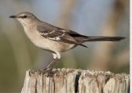
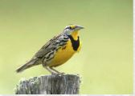

I'M A CALIFORNIA TOWHEE GLAMOUR BIRD
I may be prompted by a tireless knocking at window or car mirror.

I'M A HOUSE FINCH BIRD
I build my nest in cavities, buildings, hanging plants, and other cup-shaped outdoor decoration.

I'M A NORTHERN MOCKINGBIRD
My mimicking ability, are reflected by name means 'many-tongued mimic.'

I'M A SONG SPARROW BIRD
I use melodious and fairly complex song to declare ownership of territory and to attract females.

I'M A WESTERN MEADOWLARK
My buoyant, flutelike melody can brighten anyone's day.
I'M A WESTERN SCRUB JAY BIRD
I am fixture of dry shrublands, oak woodlands, and conspicuous visitors to backyards.